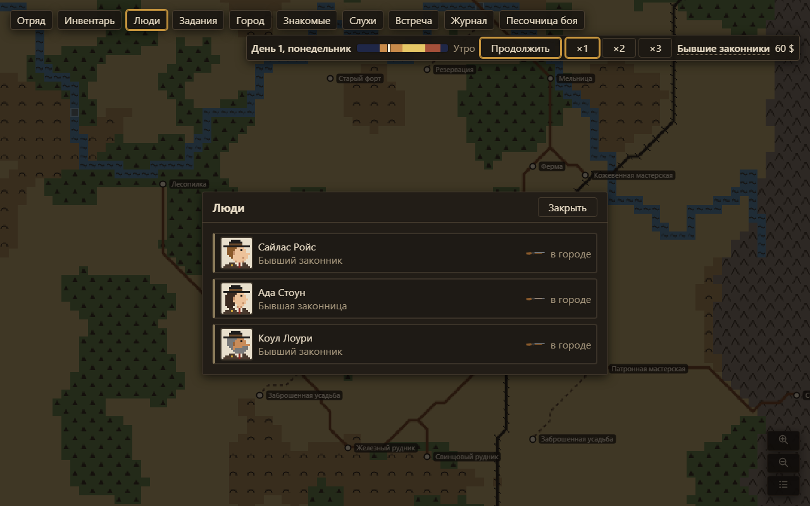
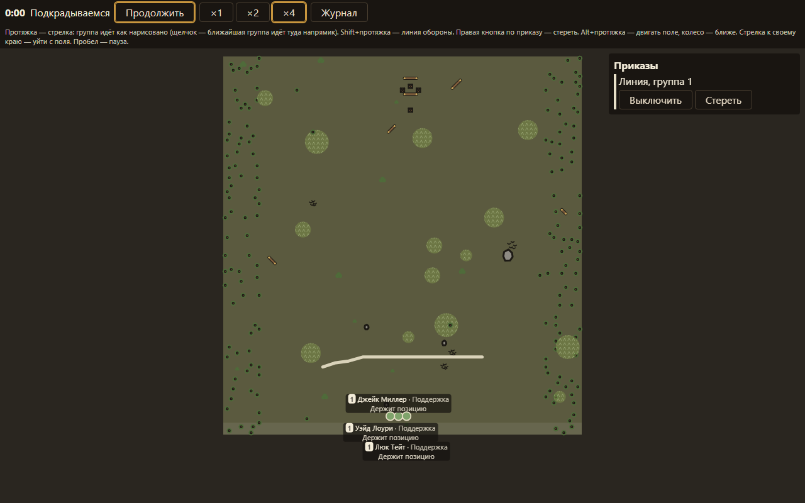
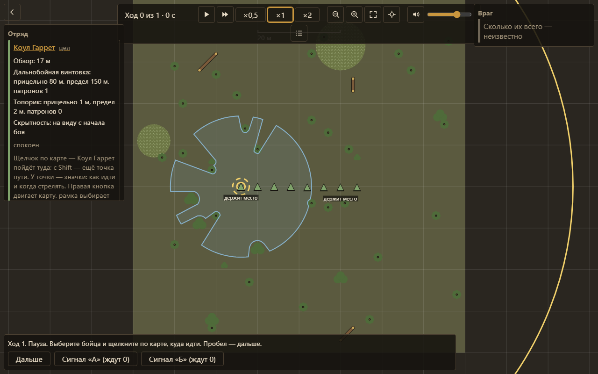
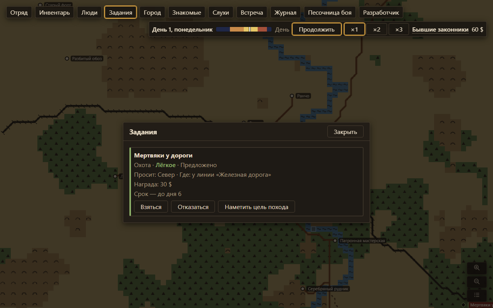

Несколько дел сразу
Здесь нет цикла «база → задание → база». Пока один отряд идёт к руднику, вы нанимаете людей, торгуете и берёте новый контракт. Главный вопрос всегда один: куда сейчас вложить время, людей и деньги.
Портфолио · Казахстан · удалённо или офис
Геймдизайнер и нарративный дизайнер
Я строю миры, которые живут без игрока — и всё равно замечают каждый его шаг.
Механику начинаю с ощущения: что игрок почувствует, что выберет и чем заплатит. Историю — с конфликта, который его решение может сломать. Я много лет играю в стратегии, RPG, симуляторы и иммерсив-симы и смотрю на них глазами разработчика: на чём держится механика и где она проседает.
Главный проект · с сентября 2026
Вы — глава компании охотников на мистическом Диком Западе. Мир медленно гниёт изнутри: порча ползёт по карте, бандиты жгут фермы, в городе кончается хлеб. Спасти всё не выйдет. Каждый день приходится решать, что защищать, кого отправить и кем пожертвовать.

Цель — эмерджентная песочница. Экономика, люди, враги и порча живут по своим правилам, а истории рождаются из их столкновений, без сценария.
Я автор игры: концепция, столпы, все механики и решения по ним. Пишу дизайн-документы, отвечаю на вопросы по механикам, проверяю каждую систему в игре.
Код, математическую модель и числа баланса по моим целям делает ИИ-разработчик (Claude Code). Я ставлю задачу на языке ощущений — «стресс должен давить к пятому дню», — а потом смотрю на результат в игре и на отчёты ботов, которые прогоняют сотни кампаний.
Потери неизбежны. Игрок выбирает, что удержать, а что отдать.
Отряды, бойцы и деньги всегда в дефиците.
Карта — это то, что вы разведали. Слухи ведут к боссам.
Прошлое, черты, отношения. Их смерть бьёт по-настоящему.
Вы решаете, как и когда драться, а не кто куда стреляет.
У задачи несколько решений, мир помнит последствия.
Здесь нет цикла «база → задание → база». Пока один отряд идёт к руднику, вы нанимаете людей, торгуете и берёте новый контракт. Главный вопрос всегда один: куда сейчас вложить время, людей и деньги.
Вы рисуете отрядам стрелки движения и линии обороны, ставите сигналы — и смотрите, как бойцы исполняют план сами. Победа или провал выглядят как следствие вашей подготовки.
Мельница мелет муку, пекарня печёт хлеб, поезд приходит раз в неделю. Сожгли мельницу — через неделю в городе нет хлеба, растут цены, появляются новые заказы.
Сколько бандитов в лагере? Неизвестно, пока не разведаете. Спят они, едят или караулят — от этого зависит, получится ли подойти незаметно.



Бой дался дольше всего. Каждую версию я начинал с ТЗ, прорабатывал на бумаге, проверял в прототипе — и шёл дальше, если ощущение не то.
Главная развилка — изображать упадок заскриптованным крахом или честно симулировать хозяйство. Я выбрал симуляцию: она рождает больше эмерджентных ситуаций, а к песочнице я и веду игру.
Дальше разбирал тему за темой с журналом решений: поток еды через город, когда цепочка переработки нужна, а когда лишняя («зерно → мука → хлеб»), крафт гильдии, город как торговый узел.
Финальная модель боя: как рисуются приказы и в какой момент срабатывают, где у игрока остаётся выбор, как устроены боевые карты — лагерь, усадьба, разветвлённые постройки.
Разведка, засада, провокация и оборона при нападении расписаны по ступеням: от полного провала до полного успеха, с тем, что игрок видит в каждом случае.
Шестнадцать итераций одного документа. Мнение жителей о компании, свой пул заданий у каждого NPC, услуги мэра и шерифа — от поиска рекрута до допроса пленного.
Предложил убрать постоянное окно найма: новые люди приходят через события. У каждой механики помечено, что решено, а что пока сознательно отложено.
Бойцы, бой, мир, город, события, снаряжение, кампания, живой мир, экономика. В каждом — вопросы о геймплее и мои решения.
Именно в этих обсуждениях общие идеи превращались в точные механики.
Ранние проекты
Оба проекта остановлены. Из каждого я вынес урок, на котором стоит Huntfall.
Год я строил мир и писал историю под визуальную новеллу. Но сцены проектировались вручную полгода, а выборы оказались пустыми: «+1 к любви» почти не меняло сцену.
Тогда я превратил новеллу в интерактивную книгу. Игрок пишет свободным текстом, ИИ ведёт сцену, а держит историю лестница конфликтов: каждая ступень задаёт не сцену, а перемену, которая обязана случиться. Как именно — решает игрок.
Прототип: клиент на Unity и сервер, где генерация разделена на роли — осложнение, писатель, ревьюер, валидатор.
Молодой маг возвращается домой, до приезда короля семь дней. Неделя разбита на слоты действий, а в конце — бал, где проверяется всё: навыки, отношения, решения.
Правило проекта: игра решает, ИИ рассказывает. Исход считает система — броски d20 с четырьмя исходами, — а ИИ лишь описывает результат. Слабый навык не запрещает действие, он меняет то, как оно пройдёт. «Куб контекста» подбрасывает время, место и занятие персонажа, так что одна ситуация каждый раз разыгрывается по-новому.
За две с половиной недели — клиент на Unity, игровой сервер и сайт с аккаунтами и платёжным каркасом.